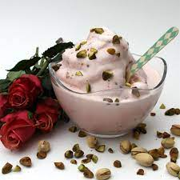

Rose ice cream

Description:
Go on, indulge yourself with this exotic combination of rose and saffron. Serve this ice cream for dessert to your guests next time you host a party and wow them! Cashews and almonds also go well with this ice cream.
- 1 pinch saffron
- 2 tablespoons warm milk
- 1½ quarts vanilla ice cream, softened
- 1½ tablespoons rose syrup
- ½ teaspoon ground cardamom
- ¼ cup chopped pistachio nuts
Steps:
- Add the saffron to the warm milk and set aside for 15 minutes.
- Combine the softened ice cream, saffron with milk, rose syrup, cardamom, and pistachios in a large bowl. Stir until the ice cream is smooth and pink in color. Scoop the ice cream back into the container and freeze 2 hours, or until ready to eat.
Home